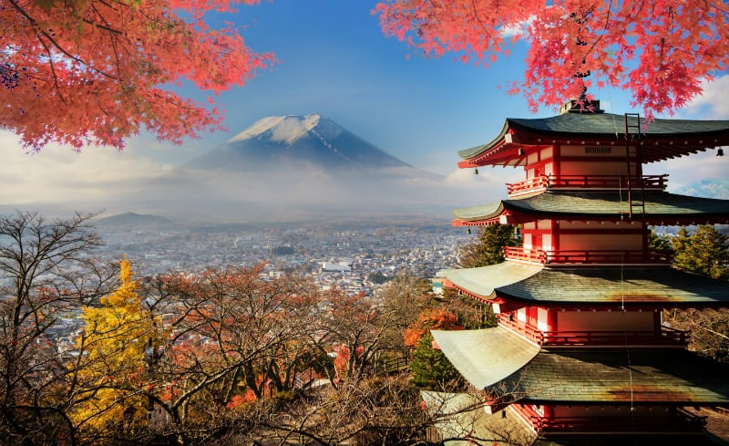

A Magia das Viagens: Explorando os 5
Melhores Destinos do Mundo
Viajar é uma das experiências mais profundas e transformadoras que podemos vivenciar. Cada viagem nos oferece uma oportunidade única de expandir nossos horizontes, mergulhar em novas culturas e apreciar a beleza do mundo de maneiras que nunca imaginamos. Ao viajar, não apenas exploramos novos destinos, mas também nos abrimos a uma vasta gama de experiências sensoriais, emocionais e intelectuais que enriquecem nossa vida. Conhecer novas culturas nos proporciona uma compreensão mais ampla da diversidade humana, enquanto a exploração de paisagens deslumbrantes nos conecta com a grandiosidade e a beleza natural do planeta. Experimentar a culinária local não é apenas um deleite para o paladar, mas uma forma de entender melhor as tradições e histórias de um lugar.
Se você está em busca do próximo grande destino para sua aventura, há vários lugares ao redor do mundo que prometem uma experiência inesquecível. Cada um desses destinos oferece uma combinação única de história, cultura e beleza natural, garantindo que sua viagem seja verdadeiramente memorável. A seguir, apresento cinco dos melhores lugares para viajar que capturam a essência de experiências inesquecíveis: Itália, Alemanha, Japão, Chile e México.
1. Alemanha: Cultura Vibrante e Paisagens Deslumbrantes
A Alemanha é um destino fascinante que combina uma rica herança cultural com uma natureza deslumbrante. Berlim, a capital, é uma cidade vibrante conhecida por sua história complexa e vida noturna animada. Munique, com sua famosa Oktoberfest e arquitetura bávara, oferece uma imersão na tradição alemã. Além disso, a Rota Romântica, com seus castelos e vilarejos pitorescos, é um passeio imperdível. Para os amantes da natureza, as paisagens do Parque Nacional da Floresta da Baviera são simplesmente de tirar o fôlego.

2. Itália: Onde História e Beleza Se Encontram
A Itália é um verdadeiro paraíso para os amantes da história, da arte e da gastronomia. Desde as ruínas majestosas de Roma até os canais românticos de Veneza, cada canto da Itália tem uma história rica para contar. Em Florença, você encontrará o berço do Renascimento, enquanto Milão oferece uma mistura sofisticada de moda e cultura. Não deixe de saborear uma autêntica pizza napolitana ou um gelato cremoso. A Itália é um destino que oferece algo para todos, com sua combinação única de charme histórico e paisagens naturais deslumbrantes.

3. Japão: Tradição e Modernidade em Harmonia
O Japão é um destino que encanta com sua incrível mistura de tradição e modernidade. Tóquio é uma metrópole futurista com tecnologia de ponta, mas também preserva tradições antigas como cerimônias do chá e templos históricos. Kyoto, por outro lado, é o coração cultural do país, com seus santuários xintoístas e jardins zen. Hiroshima, marcada por sua história, oferece uma reflexão profunda e um memorial tocante. A beleza natural do Japão, como o Monte Fuji e as cerejeiras em flor, completa a experiência com um toque de serenidade.
4. Chile: Diversidade Natural em um País Longo e Estreito
O Chile é um país que se estende ao longo da costa ocidental da América do Sul, oferecendo uma impressionante variedade de paisagens e climas. O Deserto do Atacama, o mais seco do mundo, é uma maravilha para os amantes da astronomia e da paisagem desértica. No sul, a Patagônia encanta com suas montanhas dramáticas, glaciares e lagos cristalinos. Santiago, a capital, é uma cidade dinâmica que serve como um ótimo ponto de partida para explorar o país. Além disso, a região vinícola de Valle Central oferece vinhos de classe mundial para degustar.
5. México: Um Mosaico de Cultura e Beleza Natural
O México é um destino vibrante que oferece uma rica tapeçaria de cultura, história e beleza natural. Cidade do México é uma metrópole efervescente com uma rica herança colonial e uma cena artística florescente. As praias de Cancún e Playa del Carmen são perfeitas para quem busca relaxar sob o sol e nadar em águas cristalinas. Para uma imersão na cultura antiga, as ruínas maias de Chichén Itzá e Teotihuacan são imperdíveis. A culinária mexicana, com seus sabores ousados e pratos tradicionais como tacos e mole, adiciona uma dimensão deliciosa à visita.

Conclusão
Cada um desses destinos oferece uma experiência única e memorável. A Itália encanta com seu charme histórico e culinário, a Alemanha combina cultura e paisagens naturais, o Japão mistura tradição e inovação, o Chile revela uma diversidade de cenários impressionantes, e o México proporciona uma rica tapeçaria de cultura e beleza natural. Independentemente de qual desses destinos você escolha, a jornada promete ser uma aventura rica em descobertas e maravilhas. Gute Reise, Buon viaggio, 良い旅を, Buen viaje! Ou em português: Boa viagem